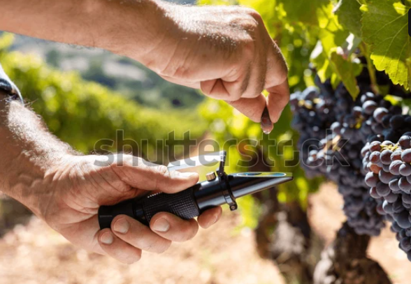
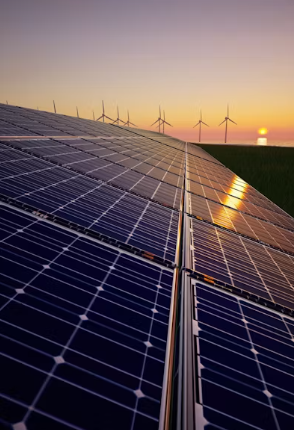

Tailored Telemetry Systems
Custom modules engineered to integrate raw weather inputs directly into active production grids.

🚜 Predictive Agro-Metrics
Maintains evapotranspiration logs combined with sub-surface crop frost warning networks to safeguard agricultural yields safely.

⚡ Clean Energy Balancing
Maps multi-layered high-altitude wind currents to gauge offshore renewable turbine production thresholds dynamically.
✈️ Avionics Optimization
Trims fuel consumption parameters safely by tracking micro-turbulence zones along major transport pathways.